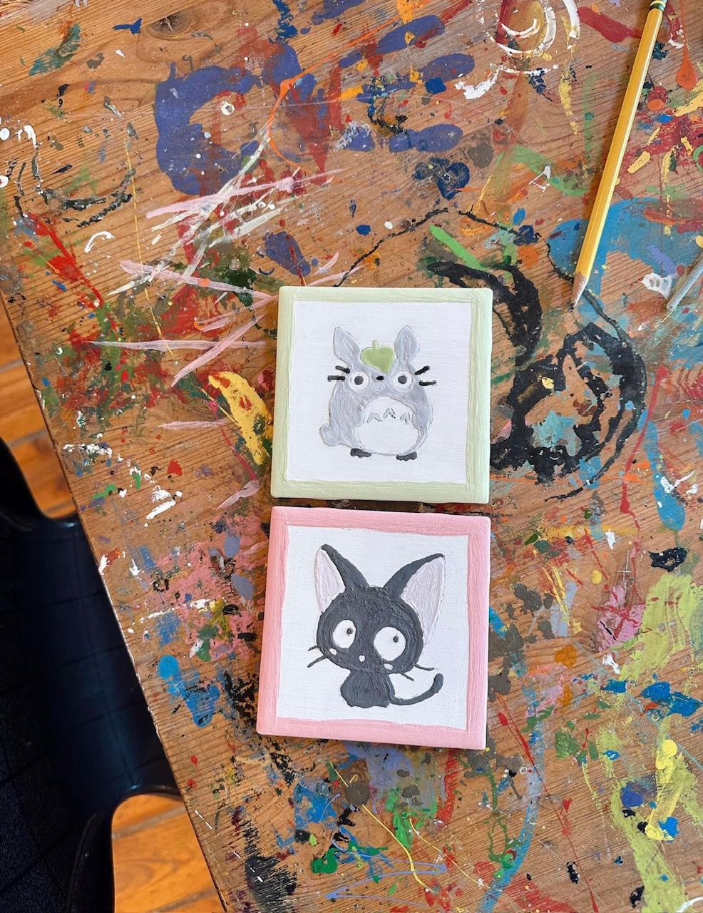

<!-- Jacob Thompson : bioSite HOBBY Page --> 
<!DOCTYPE html>
<html lang="en">
<head>
    <title>Raquel Lopez - Hobbies</title>
    <link href="../main.css" type="text/css" rel="stylesheet"/>
</head>
</html>
<body>
    <div class="sub-border">
        <div class="top-box1" id="red">
            <a href="family.html">
                <h3><i class="arrow left"></i>Family</h3>
            </a>
        </div>
        <div class="top-box2" id="green"><h1>Hobbies</h1></div>
        <div class="top-box3" id="blue">
            <a href="about.html">
                <h3>About<i class="arrow right"></i></h3>
            </a>
        </div>
    </div>
    <div class="sub-container">
        <div class="hobby-item h-item1">
            
        </div>
        <div class="hobby-item h-item2">
            <p>
                Raquel’s hobbies include shopping, crafting and sleeping. She is always willing to step 
                out of her comfort zone and try new things, for example, she attempted to learn how to 
                crochet. Unfortunately, that didn’t work out for her, but she is still hopeful to be able 
                to someday learn. Raquel feels like it is such a simple skill, but she is unsure why the 
                endless amount of YouTube videos and books haven’t helped.
            </p>
            <p>
                Raquel owns a Cricut, she loves being able to create iron on designs, stickers and even make 
                party decorations with it. It was an impulsive buy for her, but it has been something that 
                she has used a lot over the years. Crafting allows Raquel to relax and be able to get her ideas 
                out. She recently made paper flowers using toothpicks and party streamers. She learned it from 
                her mother, they would both make these flowers during Valentine's day for her teachers in elementary 
                school. Raquel was now able to do the same for her daughter as her teacher’s last day was coming up. 
                Raquel’s shopping hobby has led her to find some pretty great deals. Raquel has been able to score 
                clothes from $1.00 for her friend who is having a baby soon. 
            </p>
        </div>
        <div class="hobby-item h-item3">
            
        </div>
        <div class="hobby-item h-item4">
            <figure>
                <figcaption>Hand painted custom coasters.</figcaption>
            </figure>
        </div>
        <div class="hobby-item h-item5">
            <figure>
                <figcaption>Early stages of kids wall decor.</figcaption>
            </figure>
        </div>
        <div class="hobby-item h-item6">
            <div class="home-button">
                <a href="../index.html">
                    <h3><i class="arrow left"></i>Home</h3>
                </a>
            </div>
        </div> 
    </div>
    <footer>
        <p id="copyright">Copyright 2024 - Thompson</p>        
    </footer>
</body>